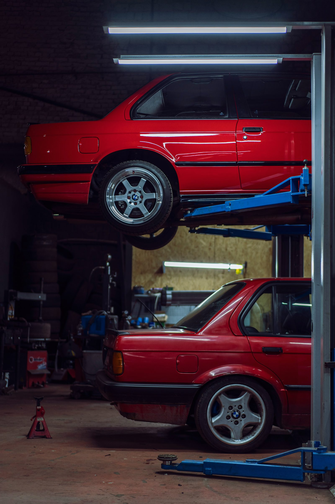

Technical diagnostic interface
Know the fault.
Fix the car.
Blueprint texture, system modules, and diagnostic language make the shop feel precise and methodical.
Cooling
Leaks, overheating, pressure tests.
Electrical
Faults, warning lights, drivability.
Suspension
Control arms, bushings, refreshes.
Inspection
Pre-purchase risk checks.

Intake
Submit symptoms.
Details make diagnosis better.